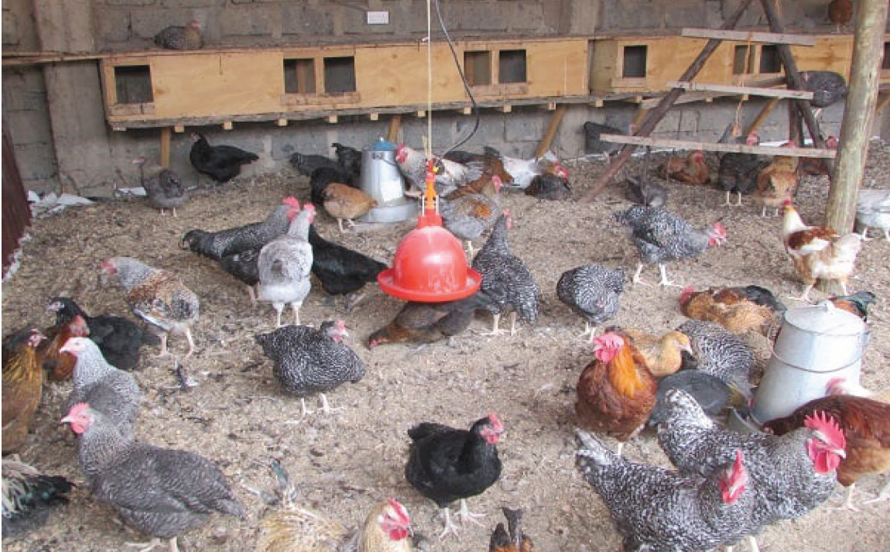

available. Figure 9.4 shows an example of birds’ confinement in a deep system.

When poultry droppings pile up, they make the litter thick. It is crucial to keep the litter dry. Do this by mixing the litter regularly. If the litter gets too wet, it can clump together. This is not good for the poultry. When the litter is wet, it can become a home for harmful micro-organisms. So, keep stirring the litter often to break the build-up of these harmful micro-organisms. If there are more chicken droppings than litter, add more fresh litter. This helps to keep the litter dry and it reduces the build-up of ammonia, which is harmful to poultry. When the litter gets more than 30 cm deep, remove it and bring in fresh litter. Follow the procedures you have already learnt to bring in fresh litter.